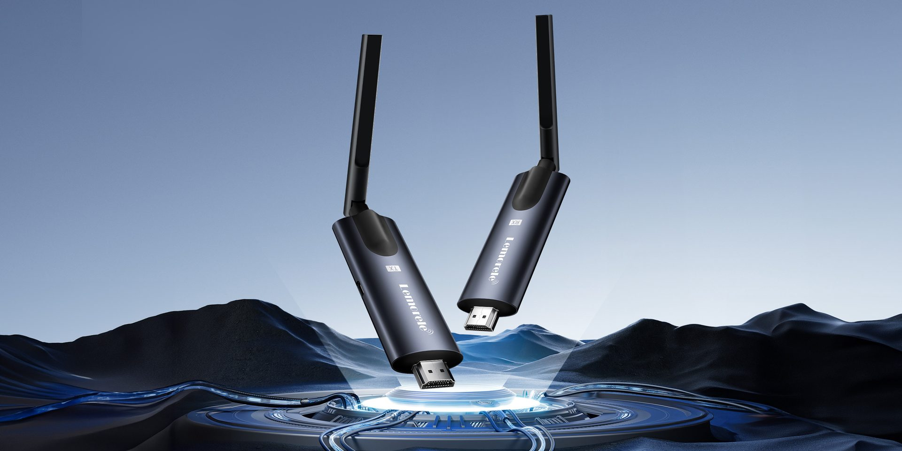

BRAND CONTENT
A+ 详情页
10 MODULES · 2.44:1

无线图传产品视觉系列
围绕低延迟、高清传输和专业影像场景，构建从主副图到 A+ 详情的完整商品视觉链路。
AMAZON LISTING · FLAGSHIP MODEL
场景视觉
围绕低延迟、高清传输与专业拍摄场景，建立清晰、可信的商品信息层级。
LISTING SYSTEM
主副图 × A+
以核心接口、传输效率和真实桌面场景为主线，让用户在短时间内理解产品价值。
10 MODULES · 2.44:1
KEY VISUAL · FUNCTION STORY
场景视觉
以办公设备组合、产品结构特写和克制的参数语言，强化稳定连接与高效扩展的使用价值。
LISTING SYSTEM
主副图 × A+
通过产品结构特写与办公设备组合，强化专业、高效、可靠的中高端定位。
10 MODULES · 2.44:1
PREMIUM SERIES · DESKTOP SCENE
场景视觉
减少无效装饰，把注意力集中在金属质感、接口细节与专业桌面氛围，形成更成熟的视觉语气。
LISTING SYSTEM
主副图 × A+
用克制的场景、材质细节与统一光影，建立更适合专业影像产品的视觉信任感。
10 MODULES · 2.44:1
从 R1000 到 P50A+ 与 G500，每个案例都完整呈现场景 Banner、主副图与 A+ 详情。